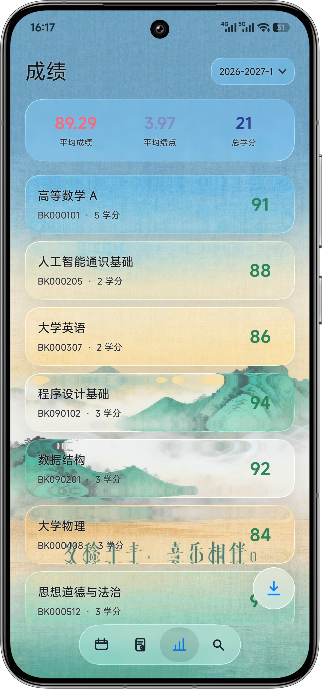
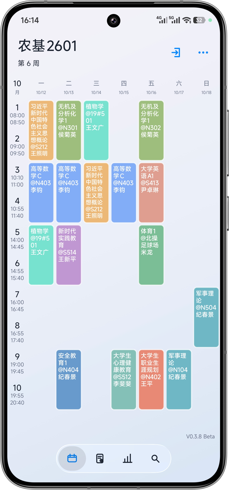
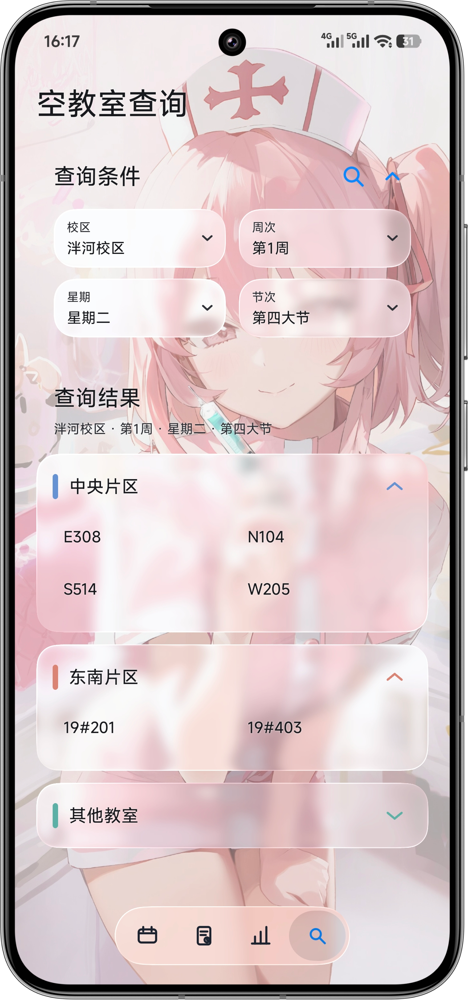
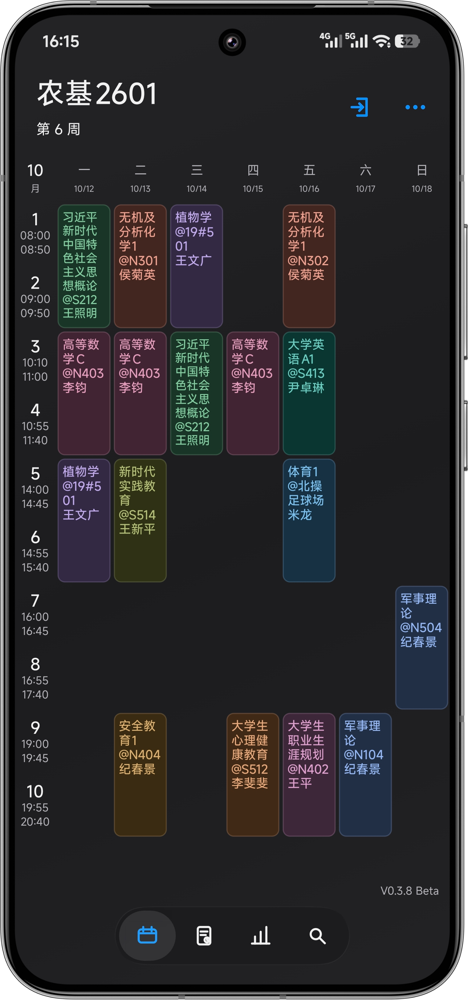
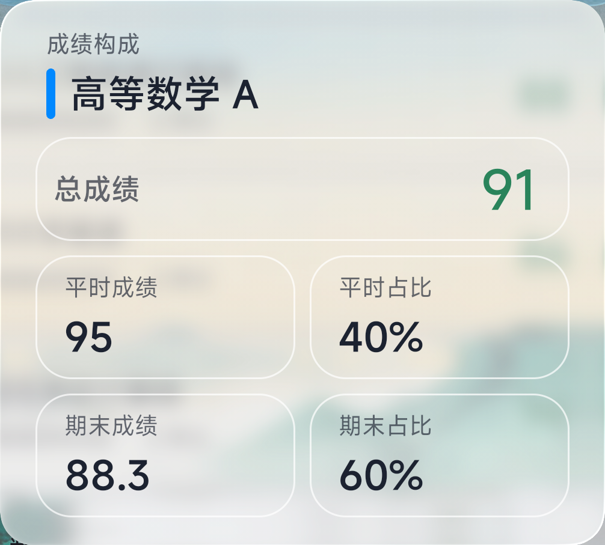

个人与全校课表
按周浏览个人课程，也可按学院、年级、专业与班级查询全校课表。
专为山东农业大学学生打造
课表、考试、成绩与空教室，集中在一个轻盈的 Android 应用里。 信息来自教务系统，常用内容离线也能随时查看。



ONE APP, ONE CAMPUS DAY
WeSDAU 不试图塞进更多功能，而是把真正高频的校园信息整理得更顺手： 登录一次，课程、考场、成绩和空闲教室都在熟悉的位置。
按周浏览个人课程，也可按学院、年级、专业与班级查询全校课表。
汇总考试时间、地点、课程成绩、学分与绩点，学期状态不再散落。
选择校区、周次、星期与节次，按教学片区快速找到可用空间。
课前通知、桌面组件、PNG 与 WakeUp CSV，把课表带到应用之外。
REAL DEVICE, REAL EXPERIENCE
课程按周铺开，教师、教室与节次保持在同一视线内。春秋与夏季作息会自动切换时间。

LIQUID GLASS, WITH A PURPOSE
底部导航、弹窗、按钮与信息卡片会从当前背景实时取色，叠加模糊、折射和高光。 你可以换上自己的壁纸，也可以调整裁切与清晰度，让界面保持个性，同时不牺牲可读性。
BEYOND THE APP
导出一张能分享的课表，或把下一节课留在桌面。信息跟着你走，不必每次打开应用。
个人课表与班级课表可保存为 PNG，也支持生成 WakeUp 可导入的 CSV。

详细与紧凑两种布局，按桌面空间自由选择。


总成绩、平时成绩、期末成绩与占比集中呈现，并自然适配深色和浅色背景。

BUILT FOR THE DAILY ROUTINE
课程数据保存在本地，短暂的网络波动不会打断查看。
固定法定节假日不显示课程，让周视图更贴近日常。
只安排下一次课程提醒，触发后再续排，减少后台占用。
支持修改课程信息，也可以加入自己的临时日程。
课表、成绩与空教室页面完善深色外观；课程卡片层级与颜色对比更清楚，在夜间也能舒适查看。
玻璃组件会从当前背景实时取色，并加入模糊、折射与高光；背景裁切和清晰度也可以自由调整。
把散落在教务系统中的高频信息带进同一个应用，并补充本地缓存、课程提醒、桌面组件和导出能力。
目前提供 Android 客户端，最低支持 Android 8.0（API 26）。
可以。已同步的课程数据会缓存在本地；考试、成绩和空教室等实时查询在教务系统或网络不可用时可能暂时受限。
可以。在登录页切换到“全校课表”，再按学院、年级、专业和班级逐级选择即可。
不是。应用支持选择自定义背景，并可调整裁切与清晰度；LiquidGlass 组件会跟随当前背景实时变化。
READY FOR THE NEW SEMESTER
下载 WeSDAU课程表，在 Android 设备上开始使用。